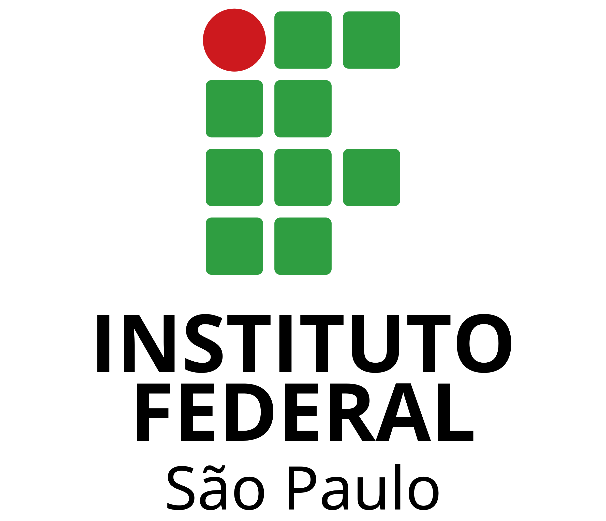

Cursos no IFSP
Cursos Disponíveis
- Engenharia de Computação: Curso voltado para a formação de profissionais capazes de desenvolver soluções inovadoras em tecnologia, com foco em automação, inteligência artificial, sistemas embarcados e redes de computadores. Os alunos aprendem a projetar e implementar sistemas computacionais que atendam às demandas do mercado e da sociedade.
- Informática: Formação em desenvolvimento de software, gestão de sistemas de informação e infraestrutura de TI. O curso prepara os estudantes para atuar em áreas como programação, banco de dados, segurança da informação e suporte técnico, com ênfase em inovação e eficiência.
- Administração: Curso que capacita os alunos em estratégias empresariais, gestão de recursos humanos, finanças e marketing. Os estudantes desenvolvem habilidades para liderar equipes, tomar decisões estratégicas e gerenciar negócios de forma ética e sustentável.
- Automação Industrial: Formação técnica e prática em projetos avançados de automação de processos industriais. O curso aborda temas como controle de sistemas, robótica, sensores e atuadores, preparando os alunos para atuar em indústrias de ponta e contribuir para a modernização do setor produtivo.
- Análise e Desenvolvimento de Sistemas (ADS): Curso focado no desenvolvimento de sistemas computacionais, com ênfase em análise de requisitos, design de software, programação e gestão de projetos. Os alunos são preparados para criar soluções tecnológicas inovadoras, atender às demandas do mercado e contribuir para o avanço da transformação digital nas organizações.

© 2025 Instituto Federal de São Paulo. Todos os direitos reservados.
Desenvolvido por João Gabriel